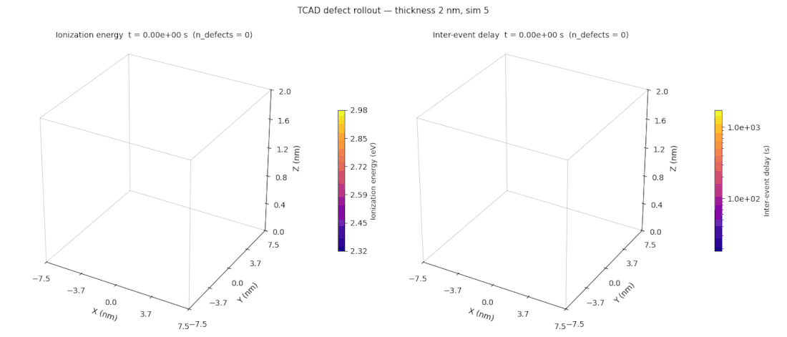
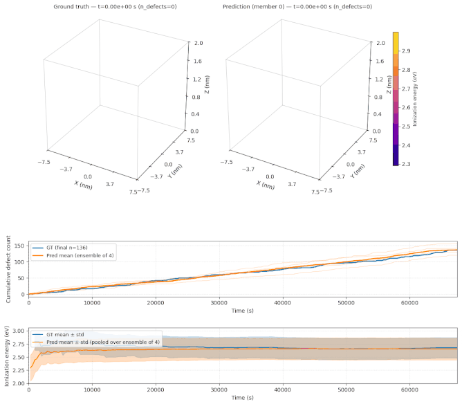

A Probabilistic Surrogate for Kinetic Monte Carlo Simulations
Kinetic Monte Carlo (KMC) is a foundational method for simulating systems that evolve through a sequence of discrete, random events. It appears across a wide range of science and engineering simulations: defect and trap generation in semiconductor devices (device reliability and endurance simulations in TCAD), ion transport and degradation in battery materials, catalytic reactions on surfaces, crystal and thin-film growth, and microstructure evolution in metals and alloys. KMC is a highly effective method, but it is computationally expensive, and it has a few characteristics that set it apart from the conventional time-stepping and integration-based solvers on which most deep-learning surrogates are built. The time between events is a random quantity produced by the solver, and the solver is itself stochastic, so the same starting configuration yields a different trajectory on every run.
The new kinetic Monte Carlo example in PhysicsNeMo is an end-to-end recipe, from training to trajectory generation, for a probabilistic surrogate that emulates a KMC solver one event at a time. From the current state, it predicts a full probability distribution over the next event, and running it forward repeatedly turns a single starting configuration into an ensemble of plausible trajectories with calibrated uncertainty.

Fig 1: A ground-truth KMC trajectory from the example dataset, defect generation in a 2 nm dielectric film. Each event adds one defect (left, colored by ionization energy); the right panel colors each defect by the inter-event delay that preceded it, on a log scale that already spans several orders of magnitude within a single run. This is the kind of stochastic, event-driven process the surrogate learns to emulate.Kinetic Monte Carlo: A Simulator Where Time Is an Output
Kinetic Monte Carlo evolves a system through a chain of discrete events. From the current state, the solver enumerates the \(M\) events that could fire next, each with a rate \(r_i \ge 0\) (its probability per unit time). It draws one event in proportion to its rate and advances a physical clock by a random inter-event time:
Here \(R\) is the total rate, and the wait until the next event is exponentially distributed with mean \(1/R\): the more, and the faster, the available events, the shorter the typical step. Repeating this rule produces a trajectory, a time-ordered sequence of events, each creating, moving, or transforming an entity in the system.
As anticipated above, two properties set KMC apart from the conventional time-stepping simulations that most surrogates emulate, and both shape the recipe's design:
- The time step is an output, not a setting. Most surrogates in computational engineering, a CFD emulator for instance, advance on a fixed, predetermined time grid and predict the field at the next step. KMC has no such grid: the inter-event delay \(\Delta t\) is drawn by the solver and can vary over many orders of magnitude within a single run (the right panel of Fig 1 shows this directly). A surrogate must therefore predict when the next event occurs, not only what it is.
- The ground truth is stochastic. Re-running the solver from the same initial state produces a different trajectory every time, so the quantity of interest is a distribution over trajectories, not a single path. A deterministic regression surrogate could, at best, learn the expected next event given the history: it would collapse that distribution onto its mean and discard exactly the variability a KMC study exists to characterize. The surrogate must instead model the full conditional distribution of the next event and generate samples from it.
KMC is also costly. Reaching a physically meaningful time can require very long event chains, and each event re-evaluates a large set of candidate rates. This makes long-horizon studies and uncertainty quantification expensive, and it is precisely where a fast, probabilistic surrogate helps.
A Probabilistic Surrogate, One Event at a Time
In this reference recipe, we train a surrogate to generate each trajectory autoregressively, one event at a time. At step \(n\), the surrogate reads the current state \(\mathcal{S}_n\) and predicts the next event as a joint probability distribution over the inter-event delay \(\Delta t\) and the new particle's features. The state \(\mathcal{S}_n\) consists of the particles created so far (each with coordinates \((x, y, z)\), a set of scalar features \(X_p\) such as a defect's ionization energy, and the delay since the previous event), the current time \(t_n\), and an optional static background mesh carrying the fields that shape the process (for example a temperature or electric-potential map encoding the boundary and initial conditions). The joint distribution over the next event factorizes as
so the model predicts when the next event occurs, then what it is, conditioned on that realized timing. Feeding each sampled event back in advances the trajectory, and drawing many independent runs from the same initial state produces the ensemble.
In its most general form, KMC models events: discrete, instantaneous changes in a system's state. An event need not involve a particle, nor even a specific location; it could be an abrupt change in a continuous field. This recipe targets a common and important special case, in which every event is the birth, death, or mutation of a discrete particle. Such particle-based problems are pervasive in science and engineering, from defects forming in a device (a defect behaves like a fictitious particle) to adatoms hopping on a surface or grains nucleating in a solid. In this setting an event and the particle it acts on are inseparable, so we use the two terms together throughout.
In the reference application, TCAD device reliability, these abstractions take a concrete form. Each particle is a defect. Its predicted features are its position \((x, y, z)\) and its ionization energy. The background mesh is the device geometry: every mesh point carries, alongside its coordinates, the local temperature and electric potential, the operating conditions under which the defects form.
Each event is predicted in two stages: the model first predicts the inter-event delay \(\Delta t\), then predicts the new particle's features \((x, y, z, X_p)\) conditioned on that delay. This leaves a choice of which delay to feed the second stage. During training, the recipe uses teacher forcing: the features head is given the ground-truth delay \(\Delta t^\star\) and fit to \(p(x, y, z, X_p \mid \Delta t^\star, \mathcal{S}_n)\). At generation, no ground-truth delay exists, so the features head is conditioned on the model's own sampled delay \(\widehat{\Delta t} \sim p(\Delta t \mid \mathcal{S}_n)\), giving \(p(x, y, z, X_p \mid \widehat{\Delta t}, \mathcal{S}_n)\). Feeding the model its own sampled delay during training as well, a push-forward scheme, would remove the gap between training and generation; it is a natural extension of the recipe but is not currently implemented.
Why GeoTransolver, and How We Adapt It
The surrogate is built on GeoTransolver, a geometry-aware transformer from the PhysicsNeMo model zoo, designed for predictions on large unstructured meshes. The choice is deliberate. GeoTransolver has demonstrated strong accuracy on complex, highly nonlinear simulations such as external-aerodynamics CFD and automotive crash, and it scales to very large meshes. That same scalability carries over here to large particle populations and long event sequences. Being attention-based, it also benefits from the predictable improvement of transformers as training data grows.
GeoTransolver uses FLARE attention, which keeps the cost of attention linear rather than quadratic in the number of tokens by routing information through a small set of learned latent queries. This is what lets the model handle large particle populations efficiently. GeoTransolver is originally a deterministic model that operates on a fixed set of mesh points; turning it into a probabilistic generator of a growing sequence of events takes four changes.
1. Autoregressive conditioning on the history. GeoTransolver has been made time-dependent once before: a previous PhysicsNeMo recipe extended it to transient crash simulation, where a mesh of fixed size deforms over time. A sequence of particle events is fundamentally different: the population grows and changes from one event to the next, and each prediction must depend only on the events that have already occurred. To handle this, the current particle population, the event history so far, is encoded into the model's global context, which every attention block reads. Rolling the model forward one event at a time then generates a full trajectory, making it another member of the GeoTransolver family.
2. Causal FLARE attention. The particle population is a set of tokens, padded to a fixed capacity, with a mask marking which tokens are real. Applying that mask inside the FLARE attention, and in the geometric-context projection, makes it causal: a prediction depends only on the particles that already exist. The next event is read out from the first free position after the last particle.
3. Time conditioning. The simulation clock steers the network through adaptive layer normalization (AdaLN-Zero, the conditioning mechanism popularized by diffusion transformers): the current time \(t_n\) is embedded and used to modulate every block, initialized so the model starts by ignoring it and learns how strongly to rely on it during training. Because times and delays span many orders of magnitude, the embedding is deliberately multi-scale, concatenating (\(\Vert\)) a linear-scale and a log-scale Fourier embedding \(\phi\),
so both very short and very long delays remain well resolved by the same network.
4. Probabilistic heads. Two lightweight output heads parameterize the two factors of the event distribution above: one models \(p(\Delta t \mid \mathcal{S}_n)\), the other \(p(x, y, z, X_p \mid \Delta t, \mathcal{S}_n)\). Each is a Gaussian mixture \(\sum_k \pi_k\,\mathcal{N}(\cdot;\mu_k,\sigma_k^2)\), and the model is trained by maximizing the likelihood of the ground-truth events. The Gaussian mixture is a deliberate choice: it is expressive enough to capture multi-modal outcomes, yet it keeps the likelihood tractable. It gives a closed-form density, closed-form mean and variance (used for the uncertainty bands below), and direct sampling, with no iterative solver at generation time. The only physical constraint it does not enforce on its own is that \(\Delta t > 0\), which is handled at generation by inexpensive rejection sampling.
Built on PhysicsNeMo, the model trains and runs with the library's standard tooling, including mixed precision, torch.compile, and multi-GPU data parallelism.
Results
To test the surrogate, we start it from the initial state of held-out simulations and let it generate an ensemble of trajectories, with no further input from the solver. Across geometries, the ensemble follows the ground-truth statistics closely, and its spread gives a calibrated estimate of the uncertainty.

Fig 2: A ground-truth trajectory (top left) and one surrogate rollout (top right) for the same 2 nm dielectric. Below, the cumulative defect count and the mean defect energy over time, ground truth versus the surrogate ensemble, with the shaded bands showing the ensemble spread. The surrogate reproduces both the growth of the defect population and the energy statistics, and its ensemble brackets the ground truth with a calibrated uncertainty, all without re-running the underlying solver.Because a single trained model produces a whole ensemble at negligible cost, quantities that are expensive to estimate with the original solver, the spread of outcomes, the time to reach a given defect count, or the probability of a rare configuration, become cheap to read off directly.
Applications Across Science and Engineering
The surrogate makes no assumption about the underlying physics; it requires only a sequence of events. It therefore applies wherever kinetic Monte Carlo is used, well beyond the example above:
- Semiconductor reliability. This is the setting shown above. Under electrical and thermal stress, defects gradually accumulate in a device's gate dielectric and eventually trigger dielectric breakdown, which sets the device lifetime. KMC models this degradation one defect at a time, but estimating failure statistics requires many long runs across stress conditions and geometries. The surrogate returns a full ensemble of degradation trajectories at once, making reliability analysis fast enough to inform device design.
- Materials science. KMC predicts how a microstructure evolves through atomic-scale events such as defect migration, precipitation, and radiation damage. Reaching experimentally relevant timescales requires very long event sequences, and capturing the variability between samples requires many independent runs. The surrogate provides both at low cost. It extends predictions further in time and makes screening across alloy compositions or operating conditions practical.
- Catalysis and surface science. KMC links the elementary surface steps, adsorption, diffusion, reaction, and desorption, to macroscopic activity and selectivity. These properties emerge only from long stochastic simulations, and each candidate material or operating point requires its own. A fast surrogate lets researchers explore temperature and pressure with quantified uncertainty, and prioritize promising catalysts before committing to full simulations or experiments.
- Crystal growth and thin films. In epitaxial and thin-film growth, KMC models atomic deposition and surface diffusion to predict film morphology, roughness, and defect density as a function of the growth conditions. Optimizing a deposition recipe means scanning these conditions, each a separate and costly simulation. The surrogate explores the process window quickly and predicts the distribution of morphologies a recipe produces, rather than a single realization.
- Electrochemistry and battery materials. KMC captures ion transport and interfacial processes such as passivation-layer growth and dendrite formation, which govern capacity, rate performance, and ageing. These span very long timescales and many charge-discharge cycles, making direct simulation of device lifetime impractical. The surrogate emulates the degradation and returns ensembles of ageing trajectories, enabling lifetime prediction with quantified uncertainty and faster screening of electrode and electrolyte chemistries.
- Metallurgy. KMC models grain growth and grain-boundary migration during annealing and heat treatment, which determine the final microstructure and mechanical properties. Linking a processing schedule to the resulting microstructure typically requires large, long-running simulations. The surrogate predicts the microstructure across many thermal schedules at once, supporting process design and digital twins of heat treatment.
The reach extends well beyond materials. The same event-driven, rate-based formulation underlies stochastic chemical kinetics, systems biology, and epidemic dynamics. The recipe applies to any process that evolves as a sequence of random events. It is most useful when the quantity of interest is the full distribution of outcomes, not a single realization.
Getting Started
The kinetic Monte Carlo example ships with PhysicsNeMo and walks through the data format, dataset statistics, training, and ensemble generation end to end. It joins a growing family of probabilistic and geometry-aware tools in the library, including the PhysicsNeMo diffusion module for generative modeling on scientific data. If you work with a kinetic Monte Carlo or other event-driven simulator and want to study it in distribution, we would love to see what you build. Find us in PhysicsNeMo GitHub Discussions.